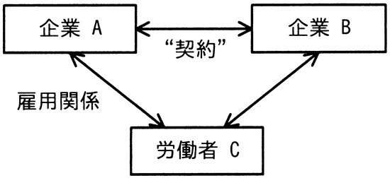

図は，企業と労働者の関係を表している。企業Bと労働者Cの関係に関する記述のうち，適切なものはどれか。

ア “契約”が請負契約で，企業Aが受託者，企業Bが委託者であるとき，企業Bと労働者Cとの間には，指揮命令関係が生じる。
イ “契約”が出向にかかわる契約で，企業Aが企業Bに労働者Cを出向させたとき，企業Bと労働者Cとの間には指揮命令関係が生じる。
ウ “契約”が労働者派遣契約で，企業Aが派遣元，企業Bが派遣先であるとき，企業Bと労働者Cの間にも，雇用関係が生じる。
エ “契約”が労働者派遣契約で，企業Aが派遣元，企業Bが派遣先であるとき，企業Bに労働者Cが出向しているといえる。